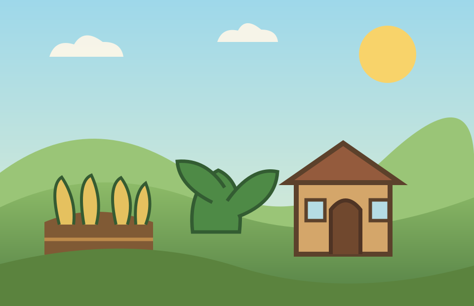
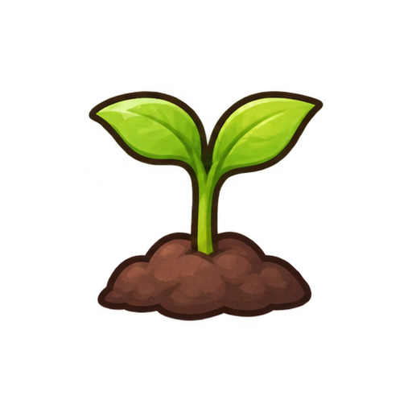

Menambah progres tumbuh 25% pada satu baris.
Stok: 0
MISI SEJARAH · MASA PENJAJAHAN
Telusuri jejak,
Telusuri jejak,
pahami sejarah!
Jelajahi suasana Nusantara pada masa penjajahan sambil menyelesaikan tantangan belajar. Setiap jawaban membantumu memahami perjalanan sejarah bangsa.

LINIMASA PERJUANGAN
Enam babak sejarah
Babak berikutnya terbuka setelah babak sebelumnya selesai.
Cara bermain
1Pilih bibit dan petak
Pilih bibit, lalu klik satu petak kosong untuk mengisi satu baris berisi tujuh tanaman.
2Jawab soal
Jawab soal untuk menyiram baris tanaman.
3Lihat tanaman tumbuh
Tanaman tumbuh otomatis dan lebih cepat saat siang.
4Panen dan lanjut
Rawat kebun selama dua hari untuk menuntaskan level.
BABAK 1 · KELAS 4
Hari 1 · Pagi
Menelusuri jejak masa penjajahan.
PERSIAPAN KEBUN
Pilih bibit yang ingin ditanam
Semua jenis tanaman tersedia sejak awal. Pilih bibit, lalu klik salah satu petak kosong untuk menanami satu baris.
Koin tersedia: 0

Bibit siap ditanam: Padi · klik petak kosongKEBUNMU
Klik satu petak kosong untuk mengisi satu baris (7 tanaman)Barisan tanaman
Petak kosong Bibit Tumbuh Siap panen Butuh disiram
TOKO PERLENGKAPAN
Gunakan item pada baris yang ditanamiItem kebun
Menambah progres tumbuh 50% pada satu baris.
Stok: 0Menyiram satu baris sekali tanpa menjawab soal.
Stok: 0